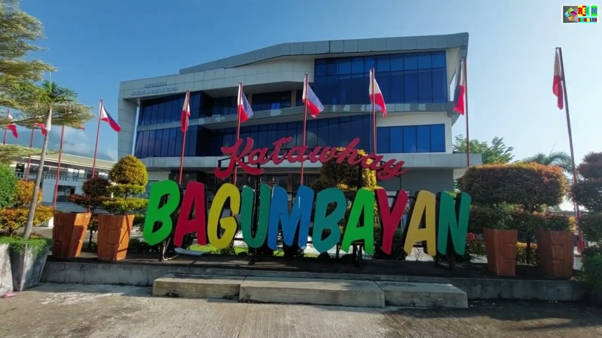

What started as a humble resettlement area for farmers has transformed into the "Adventure Capital" of the province. Bagumbayan sits at a high elevation, offering some of the most dramatic views in Central Mindanao.
Bansada Agri-Eco Park is the crown jewel. On a clear morning, the park is engulfed in a breathtaking "Sea of Clouds." It features one of the longest ziplines in the region, soaring over fruit orchards and coffee plantations.
It feels like a mountain retreat. The air is crisp, and the landscape is dominated by pine trees and organized agriculture. It is the go-to spot for those seeking adrenaline and tranquility in one trip.